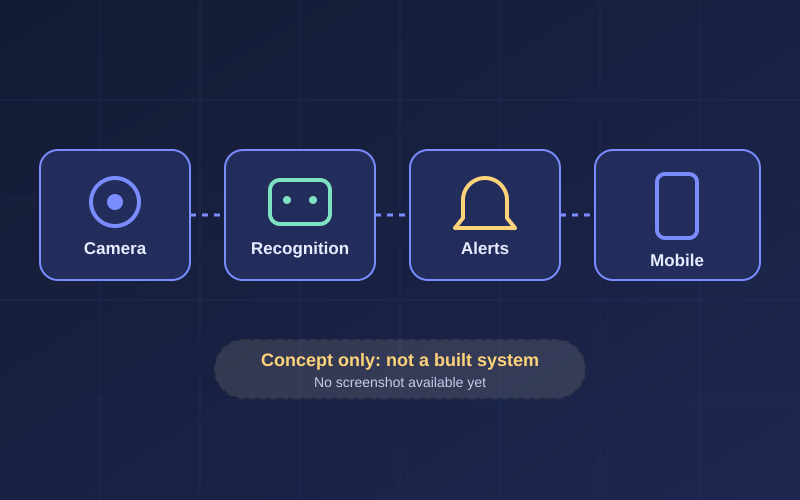

Capstone concept · ProposedIRIS
IoT-based Recognition and Intelligent Security
A proposed security system that would combine camera-based recognition with connected devices and mobile monitoring. At this stage it is a capstone concept, so the features below describe what the system is planned to do rather than what has been built and tested.
- My focus
- Planning the system and its parts, including requirements analysis and documentation, and understanding how recognition, devices, and alerts would fit together.
- Planned ideas
- What I'm learning
- How to break a large idea into components, and why privacy and false alerts need careful design.
Screenshot and links: not available yet. Ask about this project